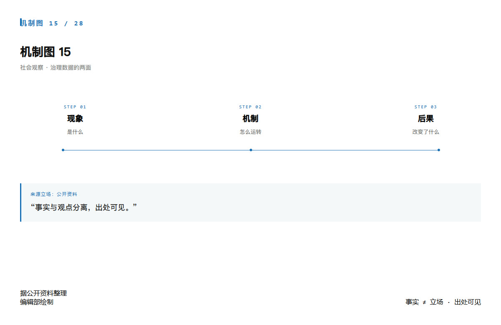

清得掉假，清不掉倾斜
社会观察 · 治理数据的两面
一份治理公告摆在屏幕上，数字一个比一个大：封了几千万个号，清了几亿条评论。你读完的第一反应大概是——平台在管事。第二反应才是：那为什么我刷到的东西还是老样子。
下面这组数字来自平台公开的治理公告，是企业自己报的，没有第三方审计。还有一条质疑，来自另一家企业负责人，他自己也是流量竞争里的参与者。两边的话都摆出来，谁的话都不替他担保。
你以为治理干净了，问题就没了。可你每天要面对的，不是假账号，是一套按规则算出来的排序。假能被清掉，倾斜清不掉。这两件事得分开算。
先把账记清楚。据平台公开数据，累计封禁虚假账号 1200 万以上，处置虚假营销笔记 1376 万篇，清理虚假评论 3.6 亿条。不管口径如何，这个量级不小，治理在发生。
写机制的批评，如果不把治理动作一起写进来，就是选择性陈列——只挑对自己有利的一半。这不是立场问题，是诚实问题。平台确实在管，管得也确实不算少。
但企业自报口径要标明白：没有第三方审计，数字反映的是平台愿意披露的那部分。它不能被当成独立结论，也不能被当成零。这就是两面都写的含义。
治理打击的「假」，是虚假信息：假账号、假营销、刷量刷评。这些东西伪造了互动，封掉它们，是在维护计价的真实。
可机制性溢价不虚假。争议内容的高互动是真的，排序是按权重算出来的，搜索答案也是按规则排出来的。没有机器人，没有刷量，每一步都合规。
所以两件事不能混：治理能清掉伪造的互动，清不掉真实互动里那种结构性的偏向。争议天然比客观更能激起回应，这是算术，不是作弊。清理账号，动不了算术。
📌 三笔治理账
封禁虚假账号 1200 万以上，处置虚假营销笔记 1376 万篇，清理虚假评论 3.6 亿条。数字很大，但都属于企业自报口径，未经第三方审计。
2026 年 4 月，有企业方负责人公开质疑平台的算法分发。这件事可以当成一个节点：一套机制被大规模公开质疑，本身就说明它已经形成了可指认的结构。
但质疑者也要标清楚立场。他来自企业方，自身就是流量竞争里的参与者，质疑里可能有商业动机。平台方的回应和治理数据同样要如实呈现，不能因为他说话响亮就替他省略另一半。
更有意思的是：质疑机制的声音，本身也在机制里传播、被计价、被站队。你支持哪一边，往往取决于你已经在哪个位置上。这是观察时必须带上的距离。
平台治理公告（企业方自报口径）
「累计封禁虚假账号 1200 万以上，处置虚假营销笔记 1376 万篇，清理虚假评论 3.6 亿条。」
企业方自报口径，未经第三方审计。数字说明治理在发生，不说明规则倾斜已经消除。

▲ 两种「假」：治理能清的，和治理清不掉的（编辑部绘制）
能谈的方向是把两本账分开披露：一本是治理，处置了多少、什么类型；另一本是规则，权重方向是什么、最近调过什么。分开摆，读者才知道自己在看哪一种事实。
这不是要求平台自证清白，也不是要求它承认偏向。只是让「管了多少」和「怎么算的」各自有据可查。两面都落在纸面上，争论才不至于变成互相喊话。
✍️ 你更愿意相信治理数字，还是更愿意相信自己被推荐的经历？
两边都有据，你会怎么摆？评论区说说。觉得有用，点个赞、点个「在看」。
下一篇：舆论以小时计，程序以年计——时间差里的社会后果。
参考
平台治理数据（封禁虚假账号 1200 万以上、处置虚假营销笔记 1376 万篇、清理虚假评论 3.6 亿条），企业方自报口径，未经第三方审计。
2026 年 4 月企业方负责人公开质疑算法分发，据公开报道；质疑方为企业方立场，平台回应以公开信息为准，两边并陈。
社会观察，不站任何性别立场。只写分发机制，不写「恶」；治理数据与机制批评并陈，企业自报口径如实标注。事实据公开来源，未证实指控不转述、不评价。拆解规则是为了理解，不是行动指南。